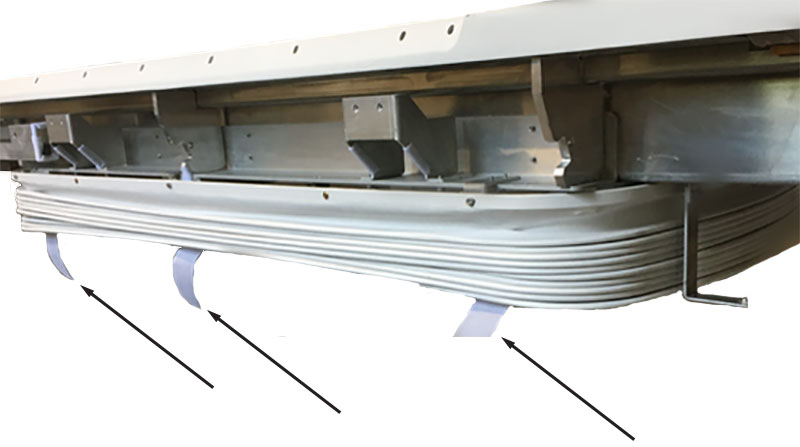

- 00000018WIA30EB4840GYZ
- id_20148983.8
- Jul 28, 2025 7:46:42 PM
Patient table task collector
Prerequisites
| Personnel requirements | |||
|---|---|---|---|
| Required persons | Preliminary requirements | Procedure | Finalization |
| Tools and test equipment | |||
|---|---|---|---|
| Item | Quantity | Part number | Manufacturer |
| Consumables | |||
|---|---|---|---|
| Item | Quantity | Part number | Manufacturer |
| Replacement parts | |||
|---|---|---|---|
| Item | Quantity | Part number | Manufacturer |
| Required conditions |
|---|
| Safety |
|---|
|
Before working in any GE HealthCare MR suite or doing any GE HealthCare service procedure, you must:
If you have any safety concerns at any time, do not begin work or immediately stop work and move to a safe location. Immediately contact your supervisor or site safety officer for instructions on how to proceed. |
About this task
Note To raise the table height, turn the pad stud to anticlockwise direction. To reduce the Table Height, turn the pad stud to clockwise direction.
Procedure
- Loosen the belt tension with belt tension lever.
Figure 9. Belt Tension Release Lever 
ISR Plumbing
- Push and hold the rod button and pull the cradle approximately 150 mm off the tabletop surface to expose the tabletop rear cover.
Figure 13. Cradle rod button 
Raising Bellows
- Remove the six screws securing the bottom of the bellows cover; three on the left-hand side and three on the right-hand side.
Figure 14. Bellows cover screws 
- Lift up the bellows cover and secure it in the up position with six strips of Velcro.
Figure 15. Bellows cover Velcro strips 
- Remove the six screws securing the bottom of the bellows cover; three on the left-hand side and three on the right-hand side.
Figure 16. Bellows cover screws - Lift up the bellows cover and secure it in the up position with six strips of Velcro.
Figure 17. Bellows cover velcro strips
- Remove the six screws securing the bottom of the bellows cover; three on the left-hand side and three on the right-hand side.
Finalization
Note The DWEPI tool is not available for software versions DV24 and later.